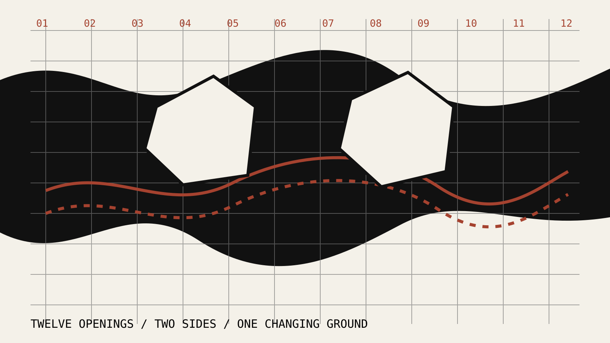

Record material decay, hydrological traces, ecological intrusion and informal occupation.

LANDSCAPE PRACTICE
IRIBIOPOLIS
Working with what remains.
01 / PRACTICE
A practice of ruination
Iribiopolis treats ruination as an active landscape condition: material, ecological, political and social.
We read decay before proposing repair.
We work with water, vegetation, occupation and time.
We make existing conflicts spatially legible.
We design access without flattening difference.
We test how damaged ground can support shared futures.
02 / PROJECT
Ruins Regrounded
Shornemead Fort and the Thames marshes are developed as a changing civic and ecological ground rather than a preserved object.
The proposal works through twelve openings, tidal occupation, material weathering and public movement. The fort remains incomplete, accessible and continually remade.
Use cuts, thresholds and routes to shift the fort from enclosure toward shared ground.
Allow tide, sediment, vegetation and use to become design agents.
03 / LINEAGE
From Ruin Reassembly to Ruins Regrounded
The practice developed through repeated studies of industrial landscapes, contamination, entropy, memory and future occupation.
04 / RELATIONS
Who we work with
Communities living beside contested landscapes; environmental and heritage groups; public institutions; researchers; fabricators; artists; ecologists; and people holding local knowledge.
What we offer
Landscape research, site recording, spatial strategy, mapping, public engagement, exhibitions, prototypes and design development.
What we seek
Collaborations where abandoned, damaged or changing sites need to be understood before they are transformed.
Start a conversation05 / CONTEXT
In conversation with
Landscape practices that work through succession, maintenance and long timeframes; community-led heritage work; counter-mapping; critical conservation; and practices that treat ecology as an active political field.
- Gilles Clément — Third Landscape
- Anna Tsing — disturbance and collaborative survival
- Tim Edensor — industrial ruins and material memory
- Caitlin DeSilvey — curated decay
- CLUSTER — urban research and public knowledge
- Athar Lina / Megawra — community-centred heritage
06 / CONTACT